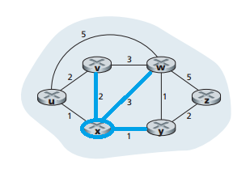
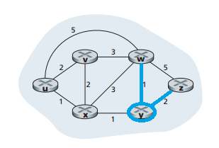
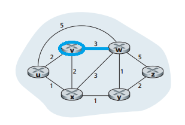
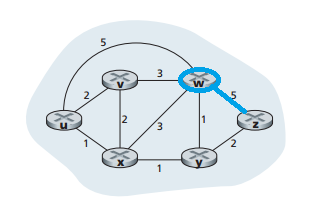
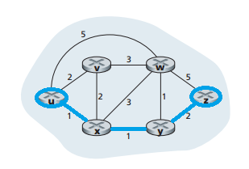

The link-state routing algorithm is also known as Dijkstra's algorithm. It computes the least-cost path from one node, the source, to all other nodes in the network. It does this by having each node broadcast link-state packets to all other nodes in the network, where each link-state packet contians the identities and costs of its attached links. The algorithm is iterative and has the property that after the kth iteration of the algorithm, the least-cost paths are known to k destination nodes. Of all the least-cost paths to all destination nodes, \ these k paths will have the k smallest costs.

We are going to compute the least-cost paths from u to all possible destinations using the network pictured below.
Starting with u, we see that the nodes connected to u are:
We have now completed our first step, the initialization. Now let us move to the first iteration. We must look for the nodes that have not been added to the N' column of step 0. If you look at the table, you will see only a u. Our choices are any other node in the network; but because x has the least-cost path, it will the node added to set N'.
Now starting with ux, we see that the nodes connected to x are:
We have completed the first iteration. Now let us move to the second iteration. We must look for the nodes that have not been added to the N' column of step 1. If you look at the table, you will see a ux. Our choices are therefore v, w, y, and z; but because v and y have the same least-cost path value, we will arbitrarily choose y and it will be added to set N'.
Now starting with uxy, we see that the nodes connected to y are:
We have completed the second iteration. Now let us move to the third iteration. We must look for the nodes that have not been added to the N' column of step 2. If you look at the table, you will see a uxy. Our choices are therefore v, w, and z; but because we chose y first and v has the least-cost value, we will now choose v and it will be added to set N'.
Now starting with uxyv, we see that the node connected to v is:

We have completed the third iteration. Now let us move to the fourth iteration. We must look for the nodes that have not been added to the N' column of step 3. If you look at the table, you will see a uxyv. Our choices are therefore w and z; but because w has the least-cost path value, we will choose w and it will be added to set N'.
Now starting with uxyvw, we see that the node connected to w is:

We have now found the least-cost path from the source node u to the destination node z with a least-cost value of 4. We do not need to perform any additional iterations.
